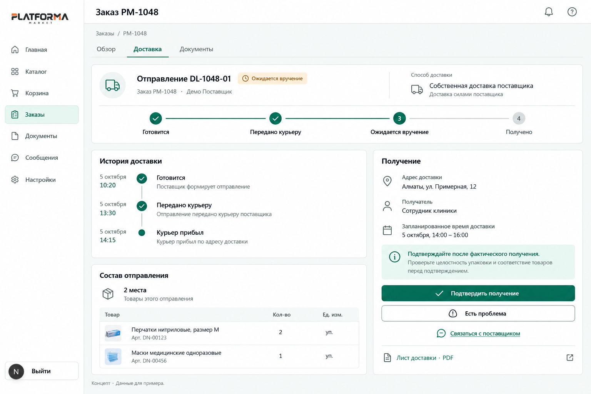
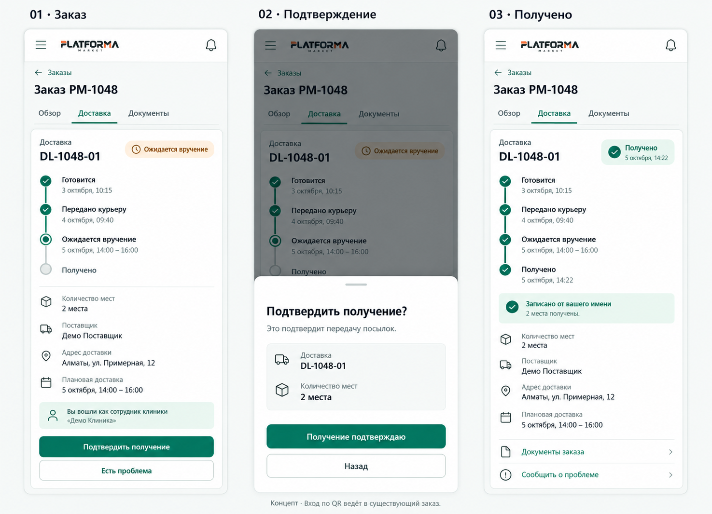
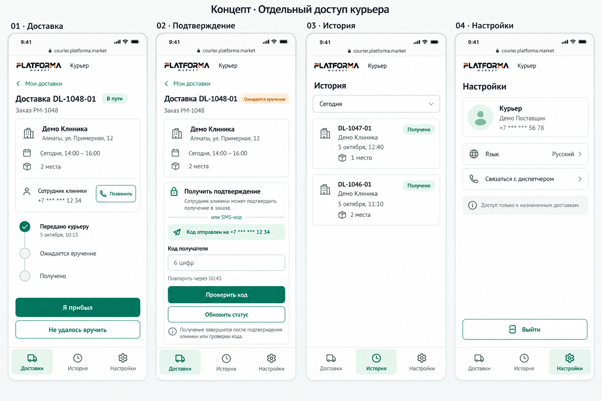

PLATFORMA MARKET · КОНЦЕПТ · 05.10.2026
Delivery Logics and Interface
Собственная доставка поставщика: получение в существующем заказе клиники и отдельный минимальный интерфейс курьера. Три листа, восемь состояний. Данные демонстрационные.
Desktop клиники Мобильная клиника Мобильный курьер Это изображения для обсуждения, а не действующая интеграция. QR открывает заказ с проверкой сессии и клиники. Курьер получает только назначенные доставки; скрытого доступа к кабинету поставщика нет в предлагаемой модели.
01 · Заказ клиники на desktop Этапы, история, состав отправления и действие получения в одном заказе.

Ожидается вручение. Следующий этап «Получено» остаётся незавершённым до серверного подтверждения. 02 · Получение на телефоне клиники Заказ → подтверждение → получено. У сотрудника используется существующая авторизация; отдельный кабинет получателя не создаётся.

Открытие по QR ведёт к этому же заказу. Подтверждение фиксирует передачу посылок и не отменяет возможность обращения. 03 · Отдельный интерфейс курьера Текущая доставка, код получателя, собственная история и минимальные настройки. Без каталога, финансов и управления поставщиком.

«Обновить статус» только перечитывает результат. В реализации кнопка проверки пустого кода будет недоступна; показанный домен — иллюстрация, а не выбранный адрес сервиса. Точные правила важнее деталей растрового макета: в реализации используются плоские Fluent-токены, текущий header проекта и серверные ограничения. Различающиеся даты на листах — демонстрационные данные. Ошибки, права, partial receipt и приёмка описаны в техническом документе.
Создано встроенным image_gen по текущим токенам и screenshot-референсу Platforma Market. Изображения открываются в полном размере по клику. Проверка реальных API, доступности и поведения приложения не выполнялась.